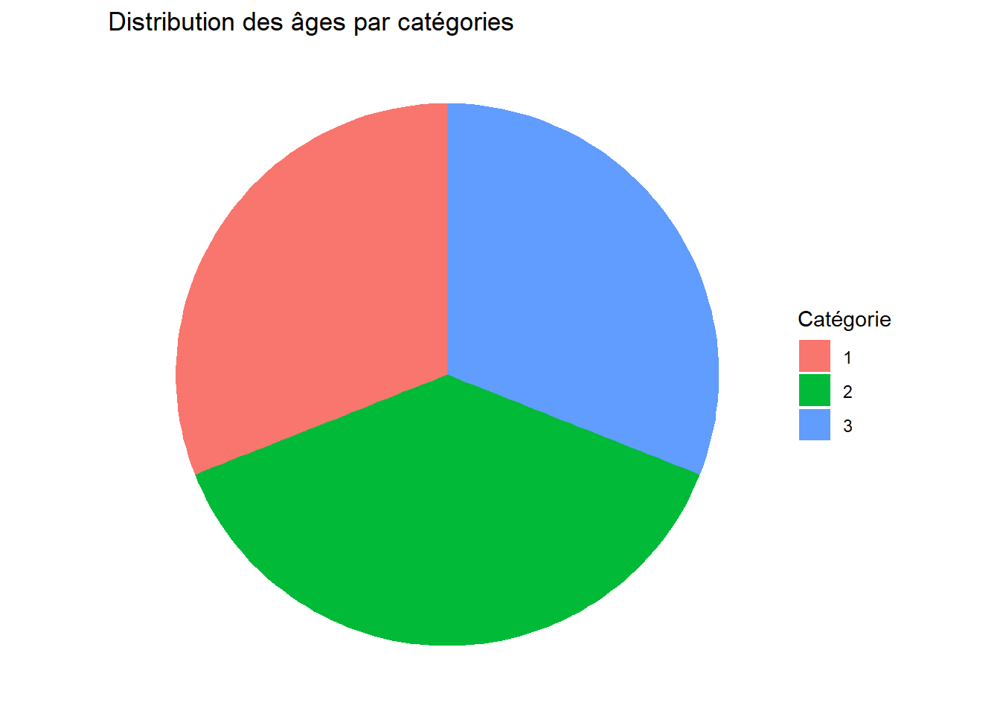
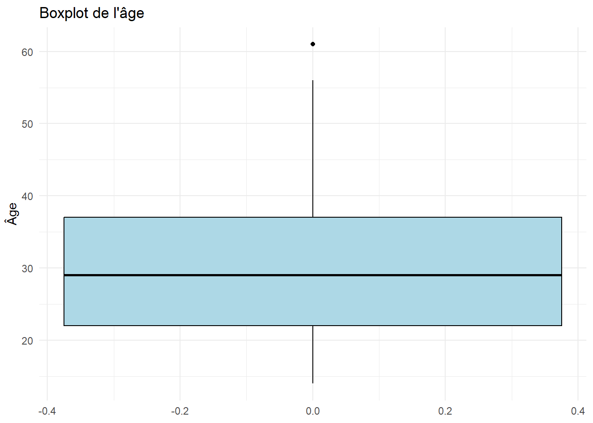
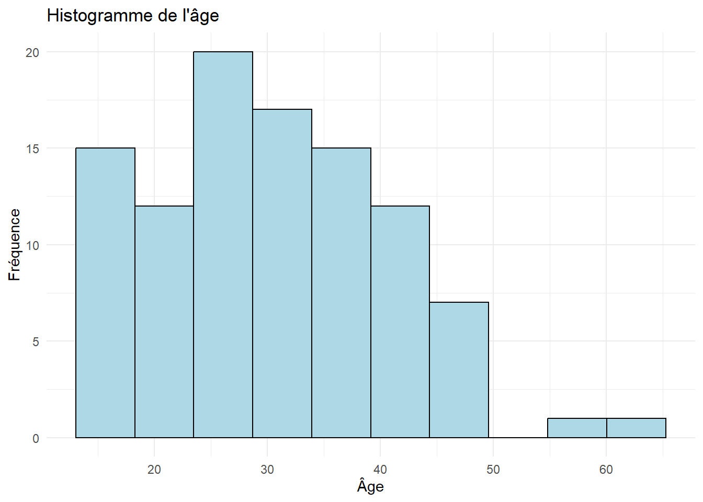
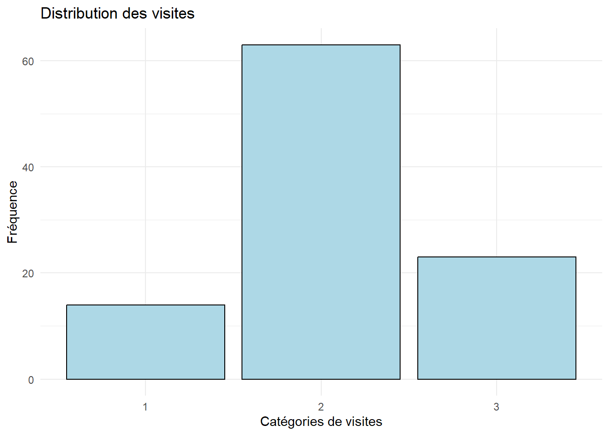
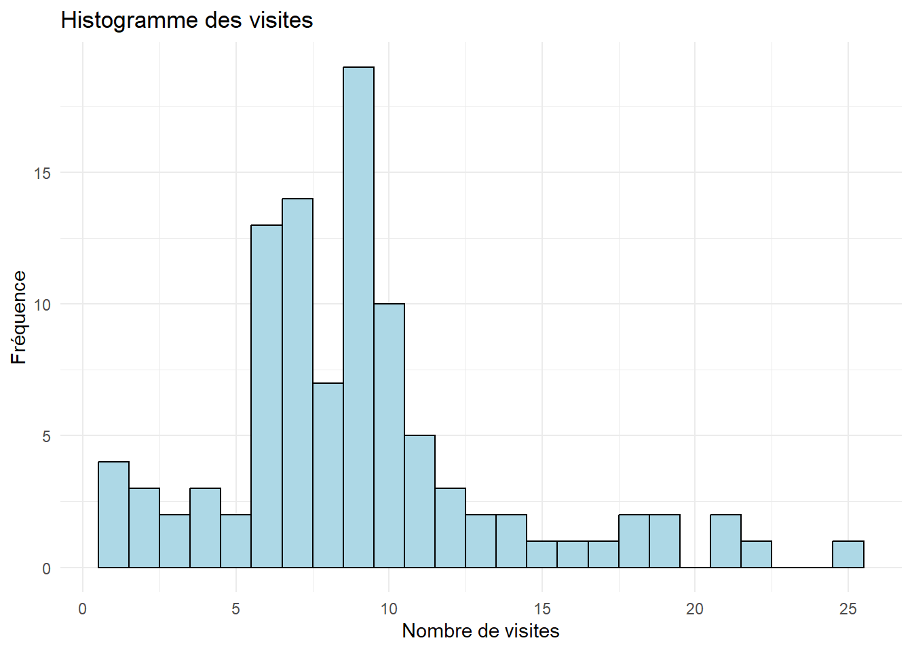
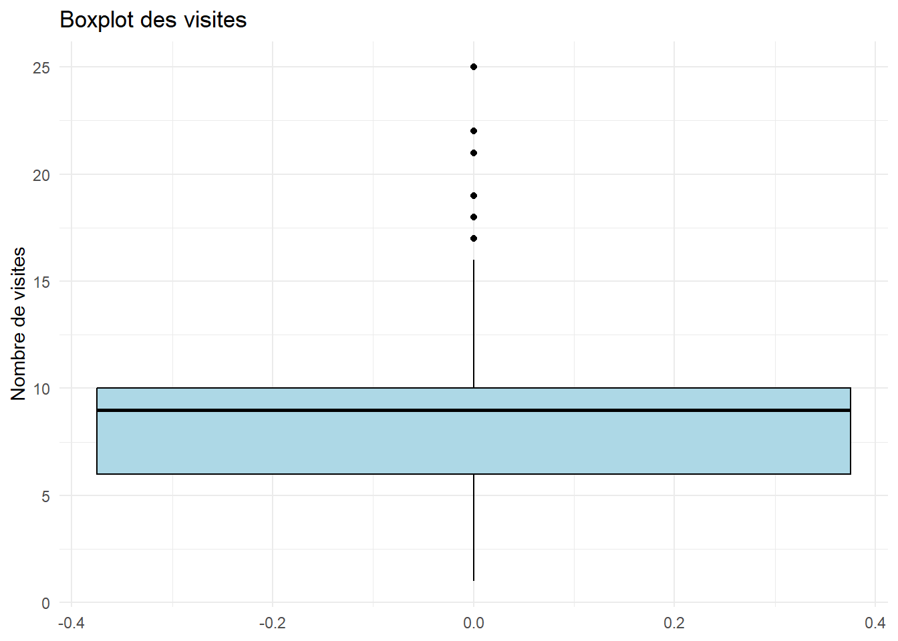
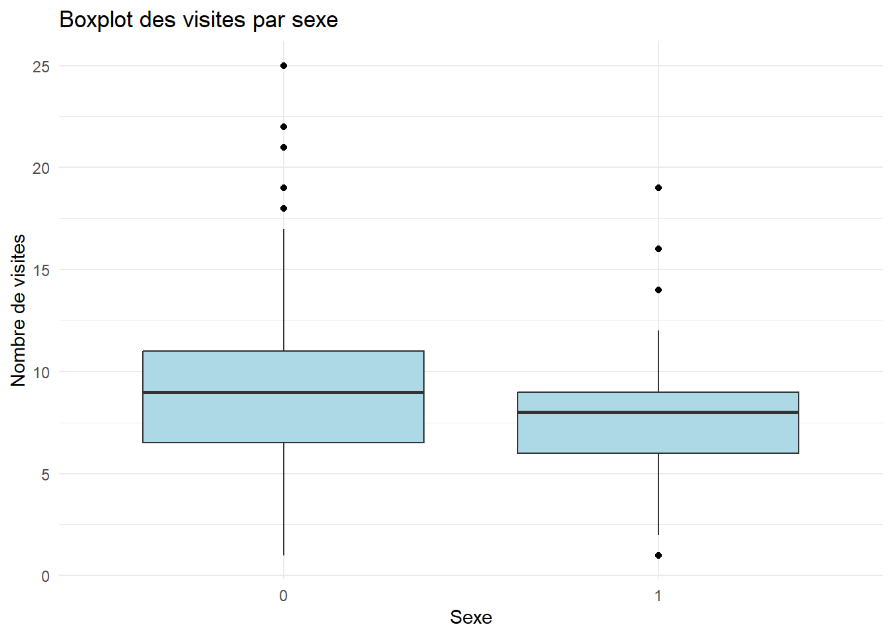
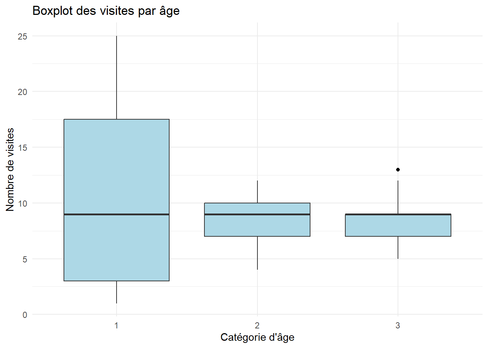

| Nom_Variable | Description |
|---|---|
| age | Âge du répondant en années. |
| visite | Nombre de fois où le répondant est allé au cinéma au cours de la dernière année. |
| sexe | Sexe du répondant (0 = Homme, 1 = Femme). |
| age_c | Catégorie d’âge : 1 = 14-24 ans, 2 = 25-34 ans, 3 = 35 ans ou plus. |
| visite_c | Catégorie de visites : 1 = 5 visites ou moins, 2 = 6-10 visites, 3 = plus de 10 visites. |
Rappel des notions statistiques
Le vocabulaire statistique
Individu (ou unité statistique) :
Élément ou objet d’étude le plus simple au sein d’une population statistique, sur lequel des données sont collectées ou mesurées pour les besoins d’une analyse. (par exemple : des personnes, des objets, des entreprises, des journées, etc.).
Population:
L’ensemble des individus sur lequel portent les conclusions de l’étude.
Échantillon:
Il s’agit d’un sous-ensemble représentatif de la population. Pour des raisons de coût, de temps ou de faisabilité, les études statistiques sont généralement menées à partir d’un échantillon plutôt que sur l’ensemble de la population. Dans ce cours, lorsque nous parlons d’un échantillon représentatif, nous faisons généralement référence à un échantillon aléatoire simple, c’est-à-dire un échantillon dans lequel chaque individu de la population a la même probabilité d’être sélectionné. Il existe plusieurs méthodes d’échantillonnage permettant de garantir la représentativité des résultats que nous n’aborderons pas dans ce cours.
Variable:
Caractéristique ou propriété que l’on souhaite étudier. Elle doit être définie et mesurée de la même manière pour chacune des unités statistiques.
Types de variables :
Qualitative nominalevariable dont les modalités n’ont pas d’ordre naturel (sa codification numérique est généralement arbitraire). Exemple : couleur des yeux, ville, région, genre, etc.Qualitative ordinalevariable dont les modalités ont un ordre naturel (sa codification numérique a du sens) : niveau de satisfaction (non satisfait, satisfait), niveau d’accord (fortement en accord, en désaccord), etc.Quantitativereprésente une caractéristique mesurable ou quantifiable dont les valeurs sont numériques et permettent des opérations arithmétiques. Elle peut être discrète (prenant des valeurs isolées, souvent par comptage) ou continue (prenant n’importe quelle valeur dans un intervalle donné). Exemple: le nombre d’enfants, le nombre de clients, âge, la taille, les ventes, les coûts, etc.
Mise en contexte
On s’intéresse à mesurer l’intérêt des Montréalais envers le cinéma. On a donc demandé, les informations suivantes, à 100 personnes choisies au hasard à la sortie de cinq salles de cinéma à Montréal :
Les données de l’exemple se trouvent dans le fichier intro.csv
# Définir le répertoire de travail
setwd("C:/Users/Fatou/OneDrive - HEC Montréal/PROJET SUPERVISE/Data")
#Importer le jeu de donnés
info = read.csv("intro.csv", sep=";", header=TRUE)# Convertir les variables en facteurs
info$visite_c = factor(info$visite_c, levels = c(1, 2, 3))
info$age_c = factor(info$age_c, levels = c(1, 2, 3))
info$sexe = factor(info$sexe, levels = c(0, 1))Statistiques descriptives
Une fois l’échantillon sélectionné, la première étape de toute étude consiste à décrire les données observées à l’aide de tableaux, graphiques et résumés statistiques.
| Variable | Type | Distribution.de.fréquences.. | Représentation.graphique | Indicateurs |
|---|---|---|---|---|
| âge | quantitative continue | Il faudrait regrouper les données en classes | Histogramme, Diagramme boîte à moustaches (boxplot) | Tous : moyenne (mean), médiane (median), écart type (standard deviation), Quartiles (quartiles), centiles (percentiles) |
| age_c | ordinale | oui | Diagramme en secteurs (Pie chart), Diagramme en bâtons (Bar chart) | Dénombrement et proportion ou pourcentage seulement |
| visite | quantitative discrète | Oui, mais si le nombre de valeurs distinctes est grand, il est préférable de regrouper les données en classes et traiter la variable comme si elle était continue. | Diagramme en bâtons, Diagramme boîte à moustaches (boxplot) | Tous (moyenne, médiane, écart type, quartiles, centiles...) |
| visite_c | ordinale | oui | Diagramme en secteurs (Pie charts), Diagramme en bâtons (Bar charts) | Dénombrement et proportion seulement |
| sexe | nominale | oui | Diagramme en secteurs (Pie charts), Diagramme en bâtons (Bar charts) | Dénombrement et proportion seulement |
Description de la distribution de l’âge_c
Distribution de fréquence
# Calculer la fréquence de chaque catégorie d'âge
ageC_freq = table(info$age_c)
# Convertir les valeurs numériques
ageC_freq_numeric = as.numeric(ageC_freq)
# Calculer le pourcentage de chaque catégorie
ageC_pourcentage = (ageC_freq_numeric / sum(ageC_freq_numeric)) * 100
# Calculer le % cumulé
pourcentage_cumul = cumsum(ageC_pourcentage)
# Créer un dataframe
ageC_df = data.frame(
Catégorie = names(ageC_freq),
Fréquence = ageC_freq_numeric,
Pourcentage = round(ageC_pourcentage, 1),
`Pourcentage cumulé` = round(pourcentage_cumul, 1)
)
# Afficher le résultat
print(ageC_df) Catégorie Fréquence Pourcentage Pourcentage.cumulé
1 1 31 31 31
2 2 38 38 69
3 3 31 31 100Diagramme en secteurs
# Charger la bibliothèque ggplot2
library(ggplot2)
# Créer un tableau de fréquence pour age_c
ageC_df = as.data.frame(table(info$age_c))
colnames(ageC_df) = c("Catégorie", "Fréquence")
# Créer le diagramme en secteurs
ggplot(ageC_df, aes(x = "", y = Fréquence, fill = Catégorie)) +
geom_bar(stat = "identity", width = 1) +
coord_polar("y", start = 0) +
labs(title = "Distribution des âges par catégories") +
theme_void()
Description de la distribution de l’âge
Indicateurs
# Afficher les statistiques descriptives de la variable age
summary(info$age) Min. 1st Qu. Median Mean 3rd Qu. Max.
14.00 22.00 29.00 30.28 37.00 61.00 Boxplot
# Créer un boxplot de la variable age
ggplot(info, aes(y = age)) +
geom_boxplot(fill = "lightblue", color = "black") +
labs(title = "Boxplot de l'âge", y = "Âge") +
theme_minimal()
Histogramme
# Créer un histogramme de la variable age pour visualiser la distribution des fréquences
ggplot(info, aes(x = age)) +
geom_histogram(fill = "lightblue", color = "black", bins = 10) +
labs(title = "Histogramme de l'âge", x = "Âge", y = "Fréquence") +
theme_minimal()
Description de la distribution de visite_c
Distribution de fréquence
# Créer un tableau de fréquence pour la variable visite_c avec les effectifs, pourcentages et pourcentages cumulés
freq_visitec = table(info$visite_c)
# Convertir en data frame
freq_visitec = data.frame(
Visite_c = names(freq_visitec),
Fréquence = as.vector(freq_visitec)
)
# Calculer les pourcentages
freq_visitec$Pourcentage = round((freq_visitec$Fréquence / sum(freq_visitec$Fréquence)) * 100, 1)
# Calculer le pourcentage cumulé
freq_visitec$Pourcentage_Cumulé = cumsum(freq_visitec$Pourcentage)
# Afficher le résultat
print(freq_visitec) Visite_c Fréquence Pourcentage Pourcentage_Cumulé
1 1 14 14 14
2 2 63 63 77
3 3 23 23 100Diagramme à Bâtons
# Renommer les colonnes du tableau de fréquence et créer un diagramme à bâtons pour visualiser la distribution des visites
colnames(freq_visitec) = c("Catégorie", "Fréquence")
# Créer le diagramme à bâtons
ggplot(freq_visitec, aes(x = Catégorie, y = Fréquence)) +
geom_bar(stat = "identity", fill = "lightblue", color = "black") +
labs(title = "Distribution des visites", x = "Catégories de visites", y = "Fréquence") +
theme_minimal()
Description de la distribution de visite
Indicateurs
#Statistiques descriptives de la variable visite
summary(info$visite) Min. 1st Qu. Median Mean 3rd Qu. Max.
1.00 6.00 9.00 8.97 10.00 25.00 Histogramme
# Créer un histogramme pour visualiser la distribution du nombre de visites
ggplot(info, aes(x = visite)) +
geom_histogram(binwidth = 1, fill = "lightblue", color = "black") +
labs(title = "Histogramme des visites", x = "Nombre de visites", y = "Fréquence") +
theme_minimal()
Boxplot
# Créer un boxplot pour visualiser la distribution du nombre de visites et détecter les valeurs extrêmes
ggplot(info, aes(y = visite)) +
geom_boxplot(fill = "lightblue", color = "black", outlier.color = "black") +
labs(title = "Boxplot des visites", y = "Nombre de visites") +
theme_minimal()
Répartition du nombre de visites par sexe
tableau croisé visite_c*sexe
# Créer un tableau croisé entre visite_c et sexe avec les fréquences et les pourcentages par sexe
tableau_croise_visite1 = as.data.frame(table(info$visite_c, info$sexe))
colnames(tableau_croise_visite1) = c("Visite_c", "Sexe", "Frequence")
# Calculer les pourcentages par sexe pour chaque catégorie de visite
tableau_croise_visite1$Pourcentage = round((tableau_croise_visite1$Frequence /
ave(tableau_croise_visite1$Frequence, tableau_croise_visite1$Sexe, FUN = sum)) * 100, 2)
# Afficher le tableau croisé avec fréquences et pourcentages
print(tableau_croise_visite1) Visite_c Sexe Frequence Pourcentage
1 1 0 6 10.17
2 2 0 35 59.32
3 3 0 18 30.51
4 1 1 8 19.51
5 2 1 28 68.29
6 3 1 5 12.20Distribution des visites par sexe
# Créer un résumé des statistiques descriptives des visites par sexe
summary_visite_sexe = info %>%
group_by(sexe) %>%
summarise(
Nombre_Individus = n(),
Moyenne_Visites = round(mean(as.numeric(visite), na.rm = TRUE), 2),
Mediane_Visites = median(as.numeric(visite), na.rm = TRUE),
Min_Visites = min(as.numeric(visite), na.rm = TRUE),
Max_Visites = max(as.numeric(visite), na.rm = TRUE),
Ecart_Type_Visites = round(sd(as.numeric(visite), na.rm = TRUE), 2)
)
# Afficher le résultat
print(summary_visite_sexe)# A tibble: 2 × 7
sexe Nombre_Individus Moyenne_Visites Mediane_Visites Min_Visites Max_Visites
<fct> <int> <dbl> <dbl> <dbl> <dbl>
1 0 59 9.83 9 1 25
2 1 41 7.73 8 1 19
# ℹ 1 more variable: Ecart_Type_Visites <dbl>Boxplot
# Créer un boxplot du nombre de visites selon le sexe pour comparer la distribution et détecter les valeurs extrêmes
ggplot(info, aes(x = sexe, y = visite, fill = sexe)) +
geom_boxplot(outlier.color = "black", outlier.shape = 16, fill = "lightblue") +
labs(title = "Boxplot des visites par sexe", x = "Sexe", y = "Nombre de visites") +
theme_minimal()
Répartition du nombre de visites par âge
Tableau croisé visites_c *age_c
# Créer un tableau croisé entre visite_c et age_c
tableau_croise_visite2 = as.data.frame(table(info$visite_c, info$age_c))
colnames(tableau_croise_visite2) = c("Visite_c", "Age_c", "Frequence")
# Calculer les pourcentages par catégorie d'âge pour visite_c
tableau_croise_visite2$Pourcentage = round((tableau_croise_visite2$Frequence /
ave(tableau_croise_visite2$Frequence, tableau_croise_visite2$Age_c, FUN = sum)) * 100, 2)
# Afficher le résultat
print(tableau_croise_visite2) Visite_c Age_c Frequence Pourcentage
1 1 1 11 35.48
2 2 1 6 19.35
3 3 1 14 45.16
4 1 2 2 5.26
5 2 2 32 84.21
6 3 2 4 10.53
7 1 3 1 3.23
8 2 3 25 80.65
9 3 3 5 16.13Distribution des visites par catégorie d’âge:
# Statistiques descriptives des visites par age
summary_visite_agec = info %>%
group_by(age_c) %>%
summarise(
Nombre_Individus = n(),
Moyenne_Visites = round(mean(as.numeric(visite), na.rm = TRUE), 2),
Mediane_Visites = median(as.numeric(visite), na.rm = TRUE),
Min_Visites = min(as.numeric(visite), na.rm = TRUE),
Max_Visites = max(as.numeric(visite), na.rm = TRUE),
Ecart_Type_Visites = round(sd(as.numeric(visite), na.rm = TRUE), 2)
)
# Afficher le résultat
print(summary_visite_agec)# A tibble: 3 × 7
age_c Nombre_Individus Moyenne_Visites Mediane_Visites Min_Visites Max_Visites
<fct> <int> <dbl> <dbl> <dbl> <dbl>
1 1 31 10.3 9 1 25
2 2 38 8.26 9 4 12
3 3 31 8.52 9 5 13
# ℹ 1 more variable: Ecart_Type_Visites <dbl>Boxplot
# Créer un boxplot du nombre de visites selon la catégorie d'âge pour comparer la distribution et détecter les valeurs extrêmes
ggplot(info, aes(x = age_c, y = visite, fill = age_c)) +
geom_boxplot(outlier.color = "black", outlier.shape = 16, fill = "lightblue") +
labs(title = "Boxplot des visites par âge", x = "Catégorie d'âge", y = "Nombre de visites") +
theme_minimal()
Inférence statistique: estimation et Tests d’hypothèsess
Population :
Y : variable d’intérêt
μ : moyenne de la population
σ² et σ : variance et écart type de la population
P : proportion de « succès » dans la population.
Lorsque les valeurs des paramètres μ, σ et π sont inconnues, on peut être intéressé à les estimer ou à les « tester ».
Les estimateurs utilisés sont définis à partir d’un échantillon.
Échantillon aléatoire de n individus :
y₁, y₂, ……, yₙ : les observations de la variable pour chacun des n individus
La moyenne de l’échantillon:
\[ \overline{Y} = \frac{\sum y_i}{n} \]
La variance de l’échantillon :
\[ s^2 = \frac{\sum (y_i - \overline{y})^2}{n-1} \]
et s l’écart-type de l’échantillon
La proportion de succès dans l’échantillon :
\[ \hat{\ p} \]
Estimation
Un estimateur est une variable aléatoire : sa valeur varie selon l’échantillon observé.
On peut avoir une idée de la précision de l’estimateur en calculant son écart-type (erreur type standard).
Pour des échantillons de taille ( n ) :
Écart-type de la moyenne échantillonnale :
\[ = \frac{\sigma}{\sqrt{n}} \]
Écart-type de la proportion échantillonnale :
\[ = \sqrt{\frac{\ p(1-\ p)}{n}} \]
Sous certaines conditions (variable de référence suivant une loi normale dans la population ou taille d’échantillon suffisamment grande), la distribution d’échantillonnage de la moyenne X̄ de la proportion p̂ peut être approximée par une distribution normale loi normale.
Estimé ponctuel
La valeur prise par l’estimateur dans l’échantillon observé fournit un estimé « ponctuel » du paramètre.
Questions:
– Donnez un estimé ponctuel du nombre moyen de visites au cinéma pour la population considérée.
– Donnez un estimé ponctuel de la proportion de personnes qui vont plus de 10 fois par année au cinéma dans la population considérée.
Intervalle de confiance
Il est préférable de donner un intervalle de valeurs pour estimer un paramètre.
On peut ainsi associer un degré de précision et un niveau de confiance à l’estimation.
Forme générale de l’intervalle de confiance bilatéral et symétrique:
IC = Estimé ponctuel ± marge d’erreur
Question Quels facteurs peuvent influencer la marge d’erreur de l’intervalle ?
Intervalle de confiance pour la moyenne
Le niveau de confiance le plus courant est 95%. Cette valeur permet généralement d’obtenir fiabilité et précision satisfaisantes, en autant que la taille de l’échantillon soit suffisamment grande.
Rappel :
\[ \overline{X} \pm t_{\frac{\alpha}{2}, n-1} \frac{S}{\sqrt{n}} \]
Où :
- ( S ) est l’écart-type de l’échantillon,
- ( t ) est le quantile d’ordre ( ( 1 - ) ) d’une loi Student à ( n - 1 ) degrés de liberté.
Question:
Estimez à l’aide d’un intervalle de confiance de niveau 95%, le nombre moyen de visites au cinéma au cours de la dernière année pour la population considérée.Donnez ensuite une interprétation de l’IC
# Effectuer un test t pour estimer la moyenne du nombre de visites et tester s'il diffère significativement d'une valeur hypothétique
t.test(info$visite)
One Sample t-test
data: info$visite
t = 19.362, df = 99, p-value < 2.2e-16
alternative hypothesis: true mean is not equal to 0
95 percent confidence interval:
8.050733 9.889267
sample estimates:
mean of x
8.97 Vrai ou faux?
Intervalle de confiance pour la proportion
Question:
Estimez à l’aide d’un intervalle de confiance de niveau 95%, la proportion d’individus qui sont allés plus de 10 fois au cinéma au cours de l’année dans la population considérée.
Admettons que le nombre d’individus qui sont allés plus de 10 fois au cinéma au cours de l’année dans la population considérée est de 23
# Définir le nombre de succès
x = 23
# Définir la taille de l'échantillon
n = 100
# Calculer l'intervalle de confiance à 95%
resultat = prop.test(x = x, n = n, conf.level = 0.95, correct = FALSE)
# Afficher les résultats
resultat
1-sample proportions test without continuity correction
data: x out of n, null probability 0.5
X-squared = 29.16, df = 1, p-value = 6.664e-08
alternative hypothesis: true p is not equal to 0.5
95 percent confidence interval:
0.1584327 0.3215438
sample estimates:
p
0.23 Interprétation: On estime que de 14.65% à 31.35% des individus de la population considérée sont allés plus de 10 fois au cinéma au cours de l’année. La marge d’erreur de cette estimation est 8.25% et le niveau de confiance de 95% (soit 19/20).
Tests d’hypothèse
Procédure statistique qui permet de vérifier une hypothèse de recherche concernant la distribution d’une variable ou la valeur d’un paramètre pour une population entière en se basant sur les données d’un échantillon seulement.
Exemple:
Un candidat se présentant à une élection dans une certaine circonscription voudrait évaluer la proportion d’électeurs ayant l’intention de voter pour lui en ce moment.
Pour ce faire, il examine un échantillon de n=150 électeurs: parmi eux, 82 ont l’intention de voter pour lui.
En se basant sur ces résultats, peut-il conclure, hors de tout doute raisonnable, qu’il récolterait plus de 50% des votes aux élections?
Principe du test d’hypothèse
On confronte 2 hypothèses :
On tente de déterminer si l’échantillon fournit des preuves suffisantes pour pouvoir rejeter l’hypothèse nulle H0 au profit de H1.
Question: Formulez les hypothèses du contexte de l’exemple de la page précédente.
Rappel:
Un échantillon n’est pas une réplique parfaite de la population. C’est pourquoi on tolère toujours un certain écart entre les résultats observés dans l’échantillon et ce qu’on devrait avoir dans la population selon l’hypothèse nulle H0.
Remarque : Le non rejet de H0 ne signifie pas que cette hypothèse soit nécessairement vraie. Cela veut simplement dire que les données de l’échantillon ne permettent pas de rejeter l’hypothèse H0 au profit de H1, « hors de tout doute raisonnable »…
Règle de décision basée sur le seuil expérimental (valeur-p)
Exemple du candidat:
Hypothèses du test: 𝐻0: p ≤ 0.5 𝑣𝑠 𝐻1: p > 0.5
\[ \hat{\ p}= 82/150= 0.546 \]
Question: Au seuil de signification 5%, les résultats de l’échantillon permettent-ils de conclure qu’en moyenne, les Montréalais qui fréquentent les cinémas y sont allés plus de 8 fois au cours de la dernière année ? Ensuite, donnez une conclusion
# Effectuer un test t unilatéral pour tester si la moyenne du nombre de visites est significativement supérieure à 8 (H0: μ ≤ 8 vs H1: μ > 8)
t.test(info$visite, mu = 8, alternative = "greater")
One Sample t-test
data: info$visite
t = 2.0937, df = 99, p-value = 0.01942
alternative hypothesis: true mean is greater than 8
95 percent confidence interval:
8.200758 Inf
sample estimates:
mean of x
8.97